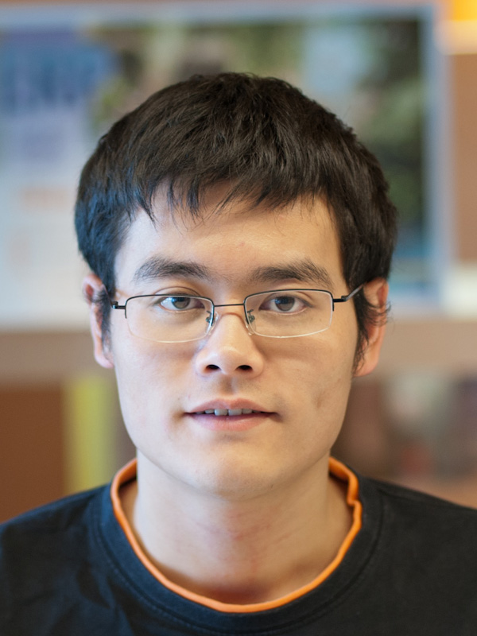

kaifei@berkeley.edu
410 Soda Hall, UC Berkeley
Kaifei Chen is currently a Ph.D. student in Computer Science at University of California, Berkeley. He is part of the Software Defined Buildings group.
He received bachelor's degree of Computer Science and Technology from University of Science and Technology of China. He has been visiting student of Prof. Pei Zhang in Carnegie Mellon University Silicon Valley (2010-2011). He also worked with Dr. Chieh-Jan Mike Liang and Dr. Fred Xiaofan Jiang in Mobile and Sensing Systems group at Microsoft Research Asia (2011-2012).
RushNet: Practical Traffic Prioritization for Saturated Wireless Sensor Networks
Chieh-Jan Mike Liang, Kaifei Chen, Nissanka Bodhi Priyantha, Jie Liu, and Feng Zhao.
SenSys 2014
Design and Evaluation of a Wireless Magnetic-based Proximity Detection Platform for Indoor Applications
Xiaofan Jiang, Chieh-Jan Mike Liang, Kaifei Chen, Ben Zhang, Jeff Hsu, Bin Cao, Jie Liu, and Feng Zhao.
IPSN 2012
PANDAA: Physical Arrangement Detection of Networked Devices through Ambient-Sound Awareness
Zheng Sun, Aveek Purohit, Kaifei Chen, Shijia Pan, Trevor Perring, and Pei Zhang.
UbiComp 2011
Affiliated demo wins the Best Demo Award
Accurate Real-time Occupant Energy-footprinting in Commercial Buildings
Yun Cheng, Kaifei Chen, Ben Zhang, Chieh-Jan Mike Liang, Xiaofan Jiang, and Feng Zhao.
BuildSys 2012
Location-log: Bringing Online Shopping Benefits to the Physical World with Magnetic-based Proximity Detection
Ben Zhang, Kaifei Chen, Yun Cheng, Xiaofan Jiang, Mike Chieh-Jan Liang, and Feng Zhao.
International Workshop on Mobile Sensing 2012
Demo: Creating Interactive Virtual Zones in Physical Space with Magnetic-Induction
Xiaofan Jiang, Chieh-Jan Mike Liang, Feng Zhao, Kaifei Chen, Jeff Hsu, Ben Zhang, and Jie Liu.
SenSys 2011
Best Demo Award
Poster: Shipping Data from Heterogeneous Protocols on Packet Train
Chieh-Jan Mike Liang, Kaifei Chen, Jie Liu, Nissanka Bodhi Priyantha, and Feng Zhao.
IPSN 2012